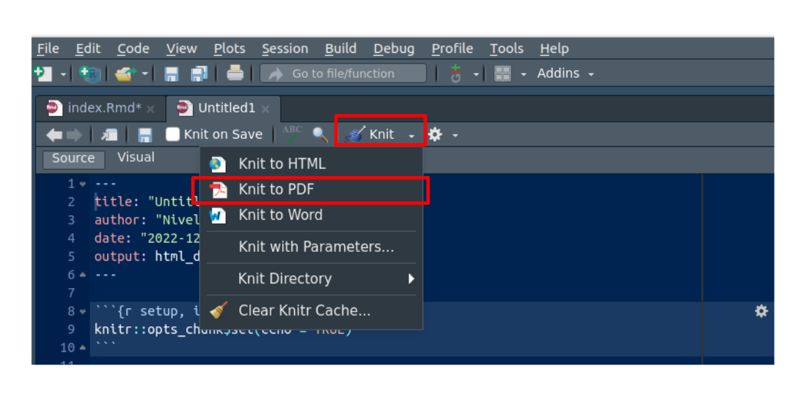

Tomada de : pixabay.com
El propósito principal de la actividad es brindar la oportunidad de familiarizarse con el programa estadístico R en la elaboración de informes estadísticos. Siguiendo los pasos proporcionadas, podrás llevar a cabo un análisis de la población afectada por Covid-19 en la región de tu elección.
En este proceso, se espera que apliques las funciones indicadas para obtención de la data, su limpieza y la generación de indicadores estadístocos y gráficos que permitan analizar datos relacionados con la propagación del Covid-19 en la región que te interese.
Una vez completado el análisis, se te solicitará que prepares un informe que resuma tus hallazgos de manera clara y concisa. Para ello, deberás crear un archivo en formato PDF, en la plataforma Brightspace.
install.packages("tidyverse") # instalación de paquete para manejo de datos
install.packages("RSocrata", dependencies = TRUE) # instalación de paquete RSocrata lee datos de manera remota
install.packages("devtools") # instala paquete para descargar paquetes desde github
devtools::install_github("dcomtois/summarytools") # descarga paquete summarytools desde repositorio github
library(tidyverse) # libreria util en el manejo de datos
library(RSocrata) # llamado de libreria RSocratastoken <- "zxMsD6eXc0zlEMryRGW87Hwrz" # token
Colombia <- read.socrata("https://www.datos.gov.co/resource/gt2j-8ykr.json", app_token = token) # lectura de manera remota table(Colombia$estado)
table(Colombia$sexo)
table(Colombia$ubicacion)
Colombia$edad=as.integer(Colombia$edad) # convertir en entero la variable edad
Colombia$sexo=str_to_lower(Colombia$sexo) # pasar a minúsculas todos valores de la variable sexo
Colombia$estado=str_to_lower(Colombia$estado) # pasar a minúsculas todos lo valores de la variable estado
Colombia$estado[Colombia$estado=="n/a"]=NA # cambiar el valor n/a por NA - valores faltantes
Colombia$recuperado=str_to_lower(Colombia$recuperado) # pasar a minúsculas todos los valores de la variable recuperado
Colombia$recuperado[Colombia$recuperado=="n/a"]=NA
Colombia$ubicacion=str_to_lower(Colombia$ubicacion) # pasar a minúsculas todos los valores de la variable ubicación
Colombia$ubicacion[Colombia$ubicacion=="n/a"]=NA Colombia22=subset(Colombia, Colombia$fecha_reporte_web>="2022-01-01") # data del 2022
Colombia21=subset(Colombia, Colombia$fecha_reporte_web>="2021-01-01" & Colombia$fecha_reporte_web<"2022-01-01") # data de 2021
Colombia20=subset(Colombia, Colombia$fecha_reporte_web>="2020-01-01" & Colombia$fecha_reporte_web<"2021-01-01") # data de 2020
Colombia22_11=subset(Colombia, Colombia$fecha_reporte_web>="2022-11-01") # data desde nov-01-2022
Valle22_11=subset(Colombia22_11, departamento=="76") # data del Valle del Cauca desde nov-01-2022
Cali22_11= subset(Colombia22_11, ciudad_municipio_nom=="CALI") # data de Cali desde nov-01-2022table(Colombia22$estado)
table(Colombia21$estado)
table(Colombia20$estado)
table(Valle22_11$estado)
table(Cali22_11$estado, Cali22_11$sexo)
summarytools::freq(Colombia22$estado, cumul = F)
summarytools::freq(Colombia21$estado, cumul = F)
summarytools::freq(Colombia20$estado, cumul = F)mean(Colombia22_11$edad, na.rm = TRUE) # media
median(Colombia22_11$edad) # mediana
var(Colombia22_11$edad) # varianza
sd(Colombia22_11$edad) # desviación estandar
min(Colombia22_11$edad) # mínimo
max(Colombia22_11$edad) # máximo
summarytools::descr(Colombia22_11$edad)t1=table(Colombia$sexo)
pie(t1)
t2=table(Colombia$sexo,Colombia$ubicacion)
barplot(t2, las=str_to_lower(Colombia$estado)1)
hist(Colombia22_11$edad, las=1, xlab = "edad (años)", ylab = "frecuencia",
main = "Edad de personas contagiadas Covid19 Colombia- Nov 2022" )
boxplot(Colombia$edad, horizontal = TRUE,
main = "Edad de personas contagiadas Covid19 Colombia")Finalmente realiza un análisis de los resultados obtenidos. Recuerde que para hacerlo debe tener en cuenta los indicadores de posición, centro, dispersión y forma. Además ayuda a reforzar el análisis una representacón gráfica.
Recuerde que para :
Iniciar la actividad debe abrir un nuevo archivo .Rmd

x =data.frame(x1= 1:20, x2=21:40) ;
apply(x,1,mean) ; apply(x,2,mean) .as.numeric(c("1.2", "2.5", "3.9")). Tambien puede ser
utilizada para la construcción de vector de ceros y unos. Coloca uno
cuando se cumple una condición y ceros cuando no se cumple. Ej.:
x= 1:20 as.numeric(x > 10).boxplot(x) .cat("Media de la edad", mean(x)).plot(density(x)).summarytools::descr(x).summarytools::freq(x) .hist(x) .instali.packages("ggplot2")
.devtools::install_github("dgonxalex80/paqueteMETODOS")
.library(tidyverse)
.max(x) .mean(x) .median(x) .min(x) .plot(x,y) .Colombia <- read.socrata("https://www.datos.gov.co/resource/gt2j-8ykr.json", app_token = token)
.sd(x)
.str_to_lower(Colombia$estado) .subset(Colombia, ciudad_municipio_nom=="CALI") .sum(1:100) .table(x)
.var(x) .dvtools : paquete de R utilizado en la creación y gestión de paquetes de R (packages)
paqueteNIV : paquete creado para el curso Nivelatorio de Estadística de la Maestría en Ciencia de Datos. Contiene funciones, datos y tutoriales.
RSocrata : paquete empleado para descargar datos a través de una API
tidyverse Es un cojunto de paquetes que funcionan de manera armónica, diseñados para ciencia de datos.